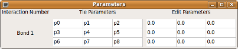

After installing, execute the program from the shell.
$ spinwaves
Several windows will appear:
The Main Window
This is the window and is where 3D images of the crystal lattice will be rendered.
The Crystallographic Information Window
This window is used to enter information about the crystallographic unit cell.
Interactions Window
This window is used to enter information about interactions between atoms in the lattice.
Parameter Window
This window is used to enter information about free parameters which must be solved for given dispersion data. For more information, see Parameter Fitting.
Processes Window
Large computations such as calculation of the ground state, dispersion, and cross section, as well as parameter fitting are all run in separate processes which can be managed in this window.
If any of these windows are closed, they can be brought back from the “Windows” menu on the main window.
The first thing you must do is generate a crystal lattice. To do this you must enter information in the Crystallographic Information Window and click the “Generate” button.
You must enter the Space group number and dimensions of the crystallographic as well as magnetic unit cells. The cutoff cell is at least as large as the magnetic unit cell. If any magnetic interactions between atoms span a length longer than the magnetic unit cell, then the cutoff cell should be made large enough to contain the interaction. The first cutoff cell will be displayed in the main window.
Unit Cell
For the crystallographic unit cell, you must enter a, b, and c as well as alpha, beta, and gamma. a, b, and c are the lengths of the three axes on the unit cell. Alpha, beta, and gamma are the angles between the three axes. At the time of this writing, this information is unimportant because the 3D model is displayed with cubic unit cells.
Magnetic Cell / Cutoff
For the magnetic and cutoff cells; Na, Nb, and Nc are the size of the cell in units of crystallographic unit cells. For example, if Na = 2, Nb = 2, and Nc =2; the cell will be a 2 by 2 by 2 block of crystallographic unit cells.
Atoms
The number of unique atoms (atoms that are not translated into each other using the symmetry operations of the space group) to be defined can be set using the spinner labeled “Atoms:” This will set the size of the atom table at the bottom of the window. Each atom is given a name, atomic number, valence charge, coordinates, and single ion anisotropy values. The name is completely up to the preference of the user. The atomic number is meant to eventually be used to select a color and size for the display of the atom, but is currently not used. The color is currently random, and all the sizes are the same. ‘Valence’ is an integer value to describe the valence electrons on the atom. For example, ‘1’ and ‘-2’ would be acceptable values. ‘x’, ‘y’, and ‘z’ are the coordinates of the atom in the crystallographic unit cell in units of the axes of the cell. These should really read ‘a’, ‘b’, and ‘c’, but since everything is being displayed orthogonally, they are equivalent. These values must be less than one; otherwise they would be outside of the unit cell. Last, are the single ion anisotropy terms, ‘Dx’, ‘Dy’, and ‘Dz’. These describe a tendency for a spin to lie along a certain axis and default to 0. The spin magnitude is, as you would expect, the magnitude of the atom’s spin.
The “Bonds” window is used to add interactions between the spins of atoms. Atom Number is the unique identifying number of the atom, which can be seen next to each atom in the 3D model displayed in the main window. Na, Nb, and Nc are the coordinates of the crystallographic unit cell in directions a, b, and c, which are currently the same as x, y, z in the main window display. The box on the very right can be clicked to turn the bond on or off. An easier way of adding interactions involves selecting atoms in the 3D display of the main window. To do this, Select “Bond Creation” from the “Mode” menu on the main window. Then click on an atom and then another atom to bond it to. This will add an entry in the “Bonds” window connecting the two atoms.
The Jij Matrix is the matrix describing the energy of the interaction between the two atoms, where the energy associated with an atom’s spin is given by the Heisenberg Hamiltonian:
Summed over all Sj, where Si is the spin of the atom and Sj is the spin of the atom interacting with Si. Dx, Dy, and Dz are the single ion anisotropy terms.
The values in these Jij matrices can either be fixed, or they can be free parameters and found with a fitting algorithm described later. The Jij Matrix Column header can be clicked to toggle between displaying parameter names and values.